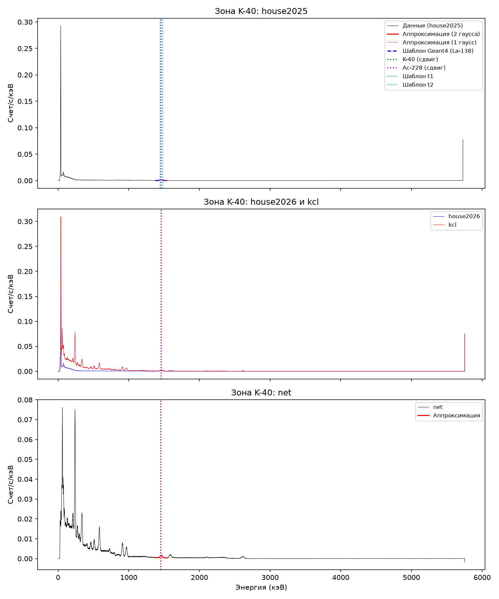

AtomNano 5 PRO LaBr3 · 8192 channels · Geant4 templates, model v8
The spectrum "Electrode and KCl" (live time 400 024 s, 8 805 293 counts) is compared with the background embedded in the same file (house background of 2026, same amplifier and scale; the operator's statement does not say whether this background was recorded inside the lead shield). A K-40 Gaussian is fitted on the "sample − background" difference; the Geant4 templates of the crystal's intrinsic radioactivity (instrument model v8, La-138 and the Ac-227 chain) describe the background as on the house-background page. The energy scale is taken from the file itself (smp.coef).
Result for the La-138 activity: first-principles expectation 7.62 Bq (range 7.27–7.83); fit 6.693 ± 0.012 (2025 background) and 6.677 ± 0.011 (2026 background) decays/s, ratio 0.878 and 0.876. An independent recalculation of the expectation (audit\sterile-act-2026-10-12.md) confirmed it. The 12 % deficit is not explained (see Assumptions).
| |
Blue line — sample spectrum 'Electrode and KCl', grey — background embedded in the file from the house 2026 (same amplifier and scale), red — K-40 Gaussian fitted on the difference (sample − background), shown in the fitting window and beyond; rates in counts per second per keV.
| Name | |
| Location | |
| Time | 2026-04-10T00:22:37.6613216+03:00 |
| Weight | 1 |
| Volume | 1 |
| Note | |
| Background file | Фон домик 8192 07-05-2026.xml |
| Device | AtomNano 5 PRO LaBr 8192 (low load) |
| Start | 2026-04-11T21:07:50.3588614+03:00 |
| End | 2026-04-16T16:27:02.3698394+03:00 |
| Live sample | 400 024 |
| Live bg | 1 693 211 |
| Counts sample | 8 805 293 |
| Counts bg | 10 125 381 |
| Cal | [-0.9246952164415537, 0.37227794529681324, 3.535193169534061e-05, -2.0611866968631878e-09, 3.259114401481066e-13] |
SampleInfo: {'Name': '', 'Location': '', 'Time': '2026-04-10T00:22:37.6613216+03:00', 'Weight': '1', 'Volume': '1', 'Note': ''}
BackgroundSpectrumFile: Фон домик 8192 07-05-2026.xml | device: AtomNano 5 PRO LaBr 8192 (low load)
sample LT=400024.3 s counts=8805293 cal=[-0.9246952164415537, 0.37227794529681324, 3.535193169534061e-05, -2.0611866968631878e-09, 3.259114401481066e-13]
a37 ch=109.02 E=40.08 nom=37.40 resid=+2.68 keV (0.60 FWHM=4.5 keV)
sum ch=3111.96 E=1468.39 nom=1471.00 resid=-2.61 keV (-0.08 FWHM=33.9 keV)
edge ch=1767.92 E=759.52 nom=788.74 resid=-29.22 keV (-2.41 FWHM=12.1 keV)
embedded background LT=1693210.7 s counts=10125381 cal=[-0.9246952164415537, 0.37227794529681324, 3.535193169534061e-05, -2.0611866968631878e-09, 3.259114401481066e-13]
a37 ch=108.90 E=40.03 nom=37.40 resid=+2.63 keV (0.58 FWHM=4.6 keV)
sum ch=3115.52 E=1470.43 nom=1471.00 resid=-0.57 keV (-0.02 FWHM=24.6 keV)
edge ch=1825.50 E=787.56 nom=788.74 resid=-1.18 keV (-0.10 FWHM=12.2 keV)
| E ± err | 1 459 ± 0.2222 |
| FWHM | 29.90 |
| Area counts ± err | 17 806 ± 369.6 |
| Rate cps ± err | 0.04451 ± 0.0009241 |
| χ²/ndf | 1.678 |
| Window | [1360, 1560] |
| Model | Gaussian + linear on net = S/LT_s - B/LT_b (embedded 2026 background, same scale) |
Caveat on K-40: the K-40 line contains the intrinsic LaBr3 structure (the La-138 sum peak, almost entirely removed by the sample − embedded background difference) and the electrode's thorium. The Ac-228 line 1459.131 keV (yield 0.89 (6) % per decay, LNHB/CEA Ac-228 table, gamma-library) lies 1.7 keV from K-40 1460.851 keV (yield 10.34 (7) %, LNHB/CEA K-40 table, X. Mougeot), which is 14 times smaller than the peak FWHM, so LaBr3 does not resolve them. The Ac-228 contribution estimated from the 911.2 keV line (yield 26.5 (8) %): the net line area on the difference is 0.172 s⁻¹ (two-Gaussian fit, χ²/ndf 3.8), which gives at most 0.0058 s⁻¹ for 1459.1 keV without an efficiency correction, that is about 13 % of the K-40 area found (0.0445 s⁻¹ in the 1360–1560 keV window). The K-40 area depends on the fit window (0.0261 s⁻¹ in the 1380–1540 keV window); this uncertainty exceeds the statistical one. The line centroid on the difference is 1459.3 ± 0.3 keV (file scale), FWHM about 30 keV against 28.1 keV from the FWHM model at 1466 keV: the peak is wider than a single line, and a superposition of electrode Th-chain lines and the La-138 sum peak is not excluded. Detection efficiency at 911 and 1459 keV was not calculated, so the K-40 activity cannot be determined from these numbers.

| Peak 1, keV | Peak 2, keV | FWHM 1, keV | FWHM 2, keV | Area 1 | Area 2 | χ²/ndf | 37 keV peak residual, keV | |
|---|---|---|---|---|---|---|---|---|
| House background 2025 | 1 432 | 1 465 | 28.60 | 28.12 | 22 160 | 40 634 | 1.303 | -0.1955 |
| Embedded background 2026 | 1 437 | 1 470 | 29.68 | 28.21 | 26 747 | 48 178 | 0.9881 | 2.634 |
| Electrode and KCl | 1 435 | 1 464 | 25.98 | 35.47 | 3 973 | 24 050 | 0.9769 | 2.679 |
Neither of the two background peaks coincides with the K-40 position: K-40 lies between them (on the sample − background difference, the K-40 centroid is 10.65 keV below the second peak); both peaks are part of the La-138 structure (peak separation in data 33.48 keV vs 33.05 keV in the Geant4 template). The conclusion relies on the scale shift; the uncertainty of the lower scale shift is up to 2–3 keV.
K-40 on the "sample − background" difference (the "Electrode and KCl" spectrum minus the house background): the centroid 1 459 ± 0.27 keV on the file scale lies between the two peaks of the house-background doublet (1 432 and 1 465 keV): neither background peak is K-40, both are La-138 structure. In the doublet fit the K-40 area (parameter A3) is 534.3 ± 7 497 counts, indistinguishable from zero.
| line | E_ref | source | centroid | resid | fwhm | area_cps | chi2ndf |
|---|---|---|---|---|---|---|---|
| W Kα1 | 59.32 | XRFSpec (Theremino) table | 61.25 ± 0.02653 | 1.928 | 4.901 | 0.3612 ± 0.006003 | 4.272 |
| W Kβ1 | 67.24 | XRFSpec (Theremino) table | 66.73 ± 0.3220 | -0.5148 | 3.704 | 0.1046 ± 0.02533 | 173.7 |
| Pb-212 | 238.6 | LNHB Pb-212 | 239.9 ± 0.01076 | 1.273 | 10.84 | 1.116 ± 0.003061 | 0.9382 |
| Ac-228 | 338.3 | LNHB Ac-228 | 337.9 ± 0.08785 | -0.4263 | 15.47 | 0.3620 ± 0.007251 | 5.438 |
| Tl-208 | 583.2 | LNHB Tl-208 | 584.1 ± 0.04586 | 0.8685 | 17.24 | 0.2827 ± 0.002211 | 1.290 |
| Bi-212 | 727.3 | LNHB Bi-212 | 728.0 ± 0.1891 | 0.6505 | 15.60 | 0.03446 ± 0.001204 | 1.113 |
| Tl-208 | 860.5 | LNHB Tl-208 | 860.5 ± 0.8011 | 0.01892 | 11.20 | 0.006381 ± 0.001157 | 3.357 |
| Ac-228 | 911.2 | LNHB Ac-228 | 910.8 ± 0.06321 | -0.4277 | 21.21 | 0.1855 ± 0.001566 | 1.284 |
| Ac-228 | 969.0 | LNHB Ac-228 | 967.3 ± 0.07409 | -1.646 | 22.74 | 0.1410 ± 0.001374 | 1.039 |
| K-40 | 1 461 | LNHB K-40 | 1 458 ± 0.2629 | -2.601 | 29.94 | 0.04508 ± 0.001217 | 1.123 |
| Tl-208 | 2 615 | LNHB Tl-208 | 2 614 ± 0.1852 | -0.5038 | 40.19 | 0.03966 ± 0.0004939 | 0.9710 |
| 37 keV peak | 2.634 |
| Doublet pair | 1 437, 1 470 |
| α-band | 2 709 |
| α-band | 3 138 |
| α-band | 3 508 |
| Beta edge | 783.8 |
| line | E_ref_keV | E_found_keV | scale_resid_keV | FWHM_keV | chi2ndf | used | model_FWHM_keV | FWHM_resid_keV | FWHM_resid_pct | comment |
|---|---|---|---|---|---|---|---|---|---|---|
| W Kα1 | 59.32 | 61.25 | 1.930 | 4.900 | 4.270 | no | 6.280 | -1.370 | -21.90 | χ²/ndf 4.27 > 3: poor fit, not used in the model |
| W Kβ1 | 67.24 | 66.73 | -0.5100 | 3.700 | 173.7 | no | 6.460 | -2.760 | -42.70 | χ²/ndf 173.66 > 3: poor fit, not used in the model |
| Pb-212 | 238.6 | 239.9 | 1.270 | 10.84 | 0.9400 | yes | 10.92 | -0.08000 | -0.8000 | |
| Ac-228 | 338.3 | 337.9 | -0.4300 | 15.47 | 5.440 | no | 12.85 | 2.620 | 20.40 | χ²/ndf 5.44 > 3: poor fit, not used in the model |
| Tl-208 | 583.2 | 584.1 | 0.8700 | 17.24 | 1.290 | yes | 16.91 | 0.3200 | 1.900 | |
| Bi-212 | 727.3 | 728.0 | 0.6500 | 15.60 | 1.110 | no | 18.99 | -3.400 | -17.90 | not in the operator's list / weak line |
| Tl-208 | 860.5 | 860.5 | 0.02000 | 11.20 | 3.360 | no | 20.79 | -9.590 | -46.10 | χ²/ndf 3.36 > 3: poor fit, not used in the model |
| Ac-228 | 911.2 | 910.8 | -0.4300 | 21.21 | 1.280 | yes | 21.45 | -0.2400 | -1.100 | |
| Ac-228 | 969.0 | 967.3 | -1.650 | 22.74 | 1.040 | no | 22.17 | 0.5600 | 2.500 | not in the operator's list / weak line |
| K-40 | 1 461 | 1 458 | -2.600 | 29.94 | 1.120 | no | 28.03 | 1.910 | 6.800 | K-40/Ac-228 near 1460: line mixture |
| Tl-208 | 2 615 | 2 614 | -0.5000 | 40.19 | 0.9700 | yes | 40.17 | 0.02000 | 0.10000 |
Model FWHM² = a + b·E + c·E², a = 13.04, b = 0.4257, c = 0.00007141. Used for convolution of Geant4 templates on the house background page.
net K-40 window: mu=1459.32+-0.22 keV FWHM=29.90 keV area=17806 counts (0.0445 cps) chi2/ndf=1.68 bin=0.571 keV net total cps (20-3000): 16.032609373126835 sample cps: 21.9355475221183 bg cps: 5.90293814899146 lt ratio k = LT_s/LT_b = 0.236252 37 keV peak sample 2.1544 cps bg 2.1663 cps ratio 0.9945 (net -0.0119 +- 0.0033 cps) sum peak window 1440-1495 (La sum + K-40 + Ac-228) sample 0.0610 cps bg 0.0305 cps ratio 2.0002 (net 0.0305 +- 0.0008 cps) 1400-1530 total counts sample 0.1251 cps bg 0.0767 cps ratio 1.6320 (net 0.0485 +- 0.0008 cps) window 1400-1530: sample 0.1957 cps, bg 0.0830 cps, residual after subtraction (net) 0.1127 cps; chi2 of net vs 0 outside K-40 gaussian n/a analytic 2025 house sum peak: 50706.6 counts / 1460692 s = 0.0347 cps